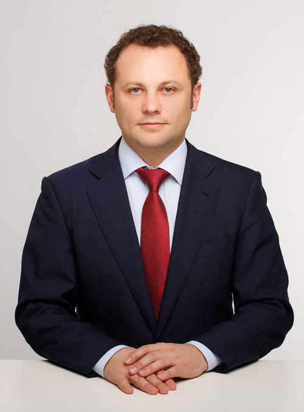
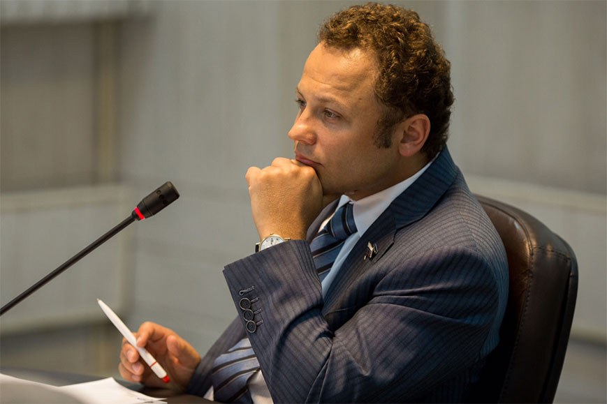
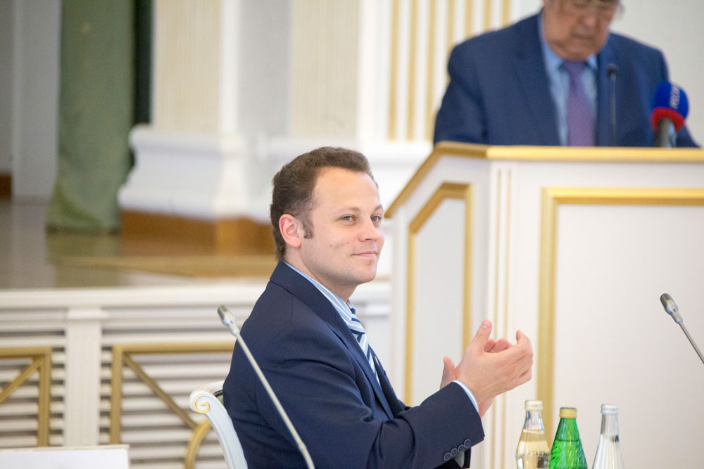
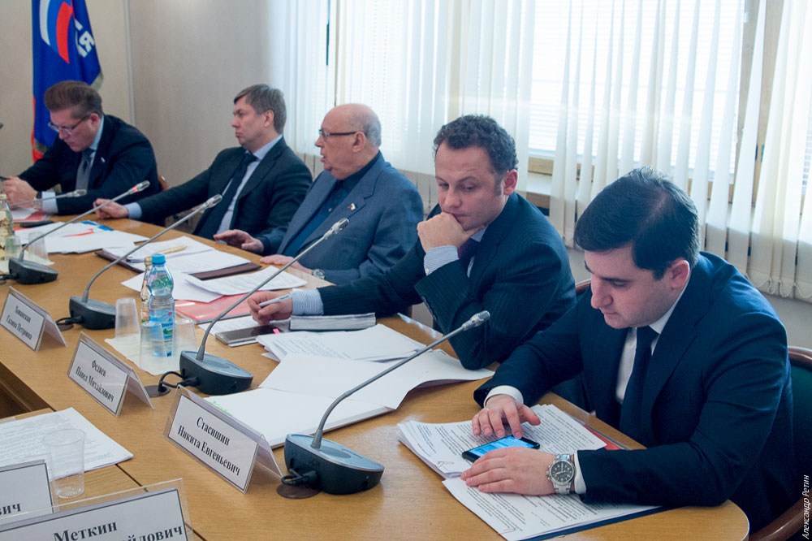
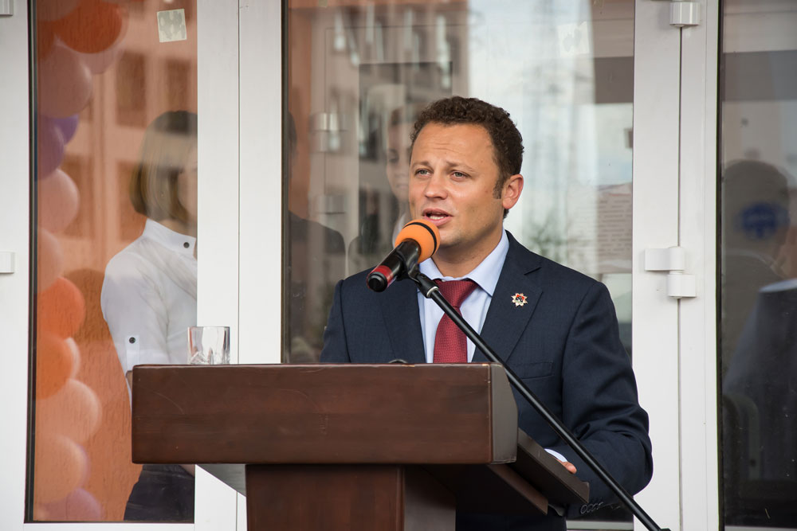
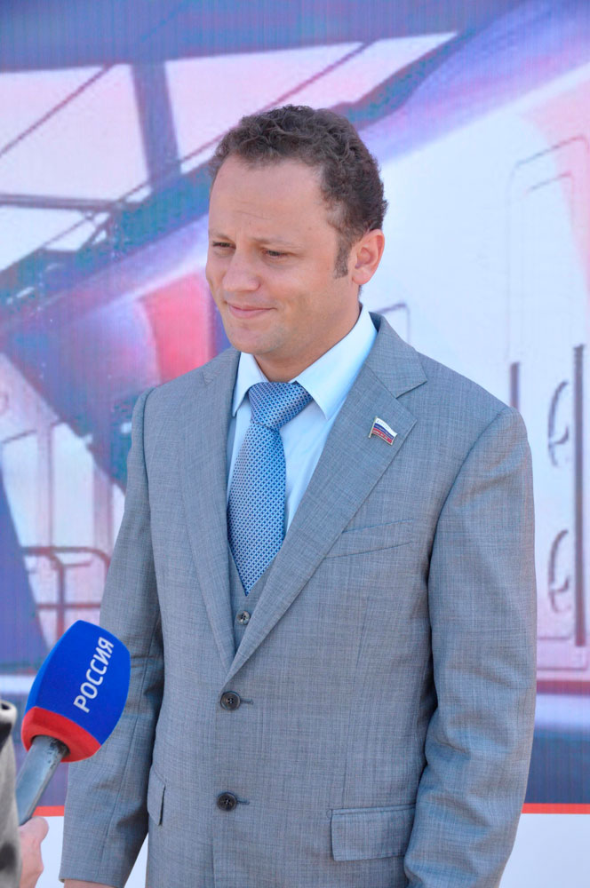
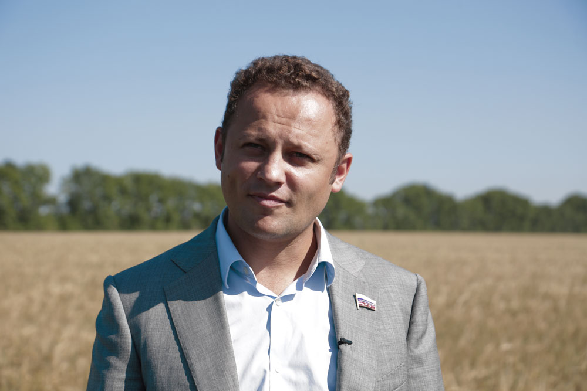

Биография

Федяев Павел Михайлович
31 июля 1982 г.
г.Кемерово
3 высших образования.
Партия: Единая Россия.
Женат, воспитывает двух дочерей и сына.
Уважаемые друзья!
Главная цель моего сайта - открытая информационная политика депутата Госдумы, члена Комитета по аграрным вопросам. Здесь вы можете познакомиться с законотворческой деятельностью нашего Комитета, узнать новости парламента страны, прочитать публикации о проблемах агропромышленного комплекса.
Надеюсь, что наше общение в виртуальном пространстве станет для вас оперативным и важным источником информации о работе депутата на родном округе, направленной, прежде всего, на улучшение жизни земляков, на эффективное развитие сельского хозяйства и сельских территорий.
Приглашаю к сотрудничеству граждан, средства массовой информации, общественные организации и отраслевые союзы, политические партии, руководителей сельскохозяйственных предприятий, представителей органов государственной власти и местного самоуправления, науки и бизнес–сообщества, всех, кто заинтересован в установлении конструктивного диалога по вопросам развития страны и региона, улучшения законодательной базы, любым другим темам, касающимся компетенции Комитета. Для меня очень важно ваше мнение и предложения, которые буду учитывать в своей работе.
Заместитель председателя Комитета по транспорту
и строительству Государственной Думы
Павел Федяев
Федяев Павел Михайлович
Родился 31 июля 1982 года в городе Кемерово.
В 2004 году окончил экономический факультет Кузбасского государственного технического университета по специальности «Экономика и управление на предприятии (в горной промышленности)».
В 2015 году окончил юридический факультет Кемеровского государственного университета (специальность «юриспруденция») и факультет «Международный институт государственной службы и управления» Российской академии народного хозяйства и государственной службы при Президенте РФ (с красным дипломом).
В совершенстве владеет английским языком.
Трудовую деятельность начал в студенческие годы на угольном разрезе «Черниговец» - учеником монтера пути. После окончания КузГТУ, в 2004 году, приступил к работе по полученной специальности – экономистом сектора планирования в ЗАО «Черниговец», курировал экономику погрузочно-транспортного управления. В 2005-2008 годах руководил финансово-экономическими подразделениями в структурах ХК «СДС» в Кемерове и в Москве.
В 2008 году П.М. Федяев возглавил на тот момент новое направление в ХК «СДС» - торговое. Под его руководством была разработана амбициозная и успешно реализованная стратегия создания и развития торговой сети «СДС-Маркет», в которую сегодня входят около 40 торговых точек (магазинов и Губернских центров фермерской торговли – рынков) в городах Кузбасса и Алтайского края.
В 2011 году был назначен на пост вице-президента ХК «СДС» по социальной политике.
В декабре 2011 года был избран депутатом Государственной Думы РФ шестого созыва. Член Комитета Государственной думы по аграрным вопросам.
Интерес к сельскому хозяйству сформировались у П.М. Федяева в детские и юношеские годы. Дед Павла Михайловича – Герой Кузбасса Юрий Иванович Федяев, агроном по специальности – всю жизнь проработал в сельском хозяйстве: руководил совхозом и племзаводом, возглавлял Крапивинский райком КПСС, стоял у истоков создания животноводческого комплекса «Ваганово». И часто брал внука с собой в рабочие поездки. Чем и предопределил его будущую специализацию в Государственной Думе ФС РФ.
С момента избрания депутатом Госдумы П.М. Федяева активно включился в решение главной задачи, поставленной руководством области: полное самообеспечение Кузбасса основными продуктами питания, особенно мясом и молоком. В 2012 году в Промышленновском районе Кузбасса был запущен в эксплуатацию современный высокотехнологичный животноводческий комплекс «Ваганово». В 2015 году комплекс получил статус племенного репродуктора по трансплантации эмбрионов крупного рогатого скота. А в январе 2016-го – первые 57 сертификатов Американской ассоциации голштинской породы, выданные телятам, рожденным способом подсадки эмбрионов высокопродуктивных коров из США. Будучи депутатом, П.М. Федяев принимал личное участие в приглашении зарубежных специалистов и организации визитов в Кузбасс для обмена опытом и организации эффективного сотрудничества. Развитие «Ваганово» – это яркий пример личного участия П.М. Федяева в укреплении новой экономики села и импортозамещения.
Женат, воспитывает двух дочерей и сына.
Увлекается спортом, играет в баскетбол и большой теннис.
Член постоянно действующего Комитета по оперативным вопросам Центрального Совета Всероссийского Совета Местного Самоуправления (ВСМС).
Является президентом Федерации дзюдо Кемеровской области, занимается популяризацией и развитием этого вида спорта. Активно участвует в мероприятиях, пропагандирующих принципы здорового образа жизни.

Награды:
- Медаль «За особый вклад в развитие Кузбасса» III степени
- Орден «За обустройство Земли Кузнецкой»
- Орден «Доблесть Кузбасса»
- Почетный знак «Золотой знак Кузбасса»
- Медаль Кемеровской области «За веру и добро»
- Медаль «70 лет Кемеровской области»
- Грамота Президента РФ В.В. Путина к памятной медали «XXII Олимпийские Зимние Игры и XI Паралимпийские Зимние Игры 2014 года в г. Сочи»: «За значительный вклад в подготовку и проведение XXII Олимпийских Зимних Игр и XI Паралимпийских Зимних Игр 2014 года в г. Сочи»
- Юбилейный знак Совета народных депутатов Кемеровской области «70 лет Кемеровской области»
- Благодарность Председателя Государственной Думы ФС РФ «За значительный вклад в развитие законодательства РФ и парламентаризма РФ»


П.М. Федяев – один из инициаторов и разработчиков федеральных законопроектов
№ 233214-6 «О внесении изменений в статью 67 Федерального закона "Об образовании в Российской Федерации" (в части реализации прав на образование детей из многодетных семей)».
№ 230907-6 «О внесении изменений в статью 26 Федерального закона "О гражданстве Российской Федерации».
О сохранении российского гражданства у несовершеннолетнего гражданина Российской Федерации в случае его усыновления (удочерения) иностранными гражданами или иностранным гражданином.
№ 226032-6 «О внесении изменений в Федеральный закон "О финансовом оздоровлении сельскохозяйственных товаропроизводителей».
В части установления порядка и условий повторного участия субъектов хозяйствования в программе финансового оздоровления.
№ 222564-6 «О внесении изменений в статьи 7 и 11 Федерального закона «О развитии сельского хозяйства».
Изменения касаются той части части закона, где речь идёт о предоставлений субсидий сельскохозяйственным товаропроизводителям на техническую и технологическую модернизацию, инновационное развитие, делает субсидии более выгодными для хозяйств.
№ 197411-6 «О внесении изменений в Федеральный закон "О государственном регулировании в области добычи и использования угля, об особенностях социальной защиты работников организаций угольной промышленности».
В соответствии с законопроектом, статья 21 Федерального закона "О государственном регулировании в области добычи и использования угля, об особенностях социальной защиты работников организаций угольной промышленности» - дополняется новым пунктом, в соответствии с которым организации по добыче (переработке) угля (горючих сланцев), в том числе созданные до начала реструктуризации угольной промышленности в 1994 году, организации по добыче (переработке) угля (горючих сланцев), часть акций которых находилась или находится в федеральной собственности, а также угольные предприятия иных форм собственности должны погашать задолженность по заработной плате, иным установленным федеральным законодательством выплатам увольняемым работникам, семьям погибших (умерших) работников за счет собственных средств.
Предлагаемые данным законопроектом нормы направлены на защиту прав и законных интересов граждан, позволят сохранить социальные гарантии и обеспечить защиту прав работников организаций угольной промышленности.
№ 186587-6 «О внесении изменений в отдельные законодательные акты Российской Федерации по вопросу усиления ответственности за совершение правонарушений в сфере безопасности дорожного движения».
Законопроектом предлагается установить нижние границы санкций, два года и четыре года соответственно, за совершение преступлений предусмотренных частями четыре и шесть статьи 264 Уголовного кодекса Российской Федерации, в которых установлена ответственность за нарушение правил дорожного движения и эксплуатации транспортных средств, совершенное лицом, находящимся в состоянии опьянения, повлекшее по неосторожности смерть человека и смерть двух или более лиц соответственно.
Также предлагается ряд мер, направленных на совершенствование норм административного законодательства, предусматривающих ответственность за управление транспортным средством водителем, находящимся в состоянии опьянения, за передачу управления транспортным средством лицу, находящемуся в состоянии опьянения, а также за невыполнение водителем требования о прохождении медицинского освидетельствования на состояние опьянения.
№ 141318-6 «О внесении изменений в статью 1 Федерального закона "О внесении изменений в отдельные законодательные акты Российской Федерации в части обеспечения жилыми помещениями детей-сирот и детей, оставшихся без попечения родителей».
№ 186614-6 «О мерах воздействия на лиц, причастных к нарушению прав граждан Российской Федерации».
Законопроектом с 1 января 2013 г. предусматривается установить меры воздействия на лиц, причастных к нарушению прав граждан Российской Федерации, к которым относятся: запрет на въезд на территорию Российской Федерации граждан Соединенных Штатов Америки, совершивших преступления в отношении граждан Российской Федерации, находящихся за рубежом, или причастных к их совершению и т.п.
Закон принят, опубликован в "Российской газете", 29 декабря 2012 года.
№ 156255-6 «О внесении изменений в Федеральный закон «О защите населения и территорий от чрезвычайных ситуаций природного и техногенного характера».
Законопроект уточняет полномочия органов государственной власти в части создания системы оповещения и информирования населения.
№ 155690-6 «О внесении изменений в Федеральный закон «О физической культуре и спорте в Российской Федерации».
Законопроектом предусмотрено дополнение полномочий Российской Федерации и субъектов Российской Федерации в области физической культуры и спорта положениями о содействии развитию молодежного спорта.
№ 110911-6 «О внесении изменений в статью 94 Трудового кодекса Российской Федерации».
Поправка дает возможности увеличения продолжительности ежедневной работы (смены) для работников, занятых на работах с вредными и (или) опасными условиями труда.
№ 102766-6 «О внесении изменений в отдельные законодательные акты Российской Федерации в части регулирования деятельности некоммерческих организаций, выполняющих функции иностранного агента».
Этот Закон делает более прозрачным финансовую деятельность некоммерческих организаций в части получения денежных средств и иного имущества из иностранных источников.
№ 100542-6 «О внесении изменения в статью 217 части второй Налогового кодекса Российской Федерации».
Законопроектом предлагается дополнить статью 217 Налогового кодекса Российской Федерации новым пунктом 14.1, из которого следует, что суммы, полученные главами (крестьянских) фермерских хозяйств за счет средств бюджетов бюджетной системы Российской Федерации в виде гранта на создание и развитие крестьянского фермерского хозяйства, единовременной помощи на бытовое обустройство начинающего фермера, гранта на развитие семейной животноводческой фермы освобождаются от налогообложения.
№ 100539-6 «О внесении изменения в Федеральный закон «О развитии сельского хозяйства».
Законопроект предполагает: начиная с 2013 года ввести порядок представления из федерального бюджета субсидий товаропроизводителям (включая производственные кооперативы) на компенсацию 25-30% стоимости приобретаемой современной сельскохозяйственной техники (тракторов, комбайнов, посевных и почвообрабатываемых машин). Указанный порядок выплаты компенсации и перечень машин, на которые этот порядок распространяется, определяет Правительство Российской Федерации.
№ 100532-6 О внесении изменения в статью 3 Федерального закона от 22 июля 2008 года № 155-ФЗ «О внесении изменений в часть вторую Налогового кодекса Российской Федерации».
Дает механизм продления срока применения особого порядка перехода организаций потребительской кооперации на уплату единого налога на вмененный доход.
№ 100530-6 «О внесении изменения в статью 217 части второй Налогового кодекса Российской Федерации».
Законопроектом предлагается дополнить статью 217 Налогового кодекса Российской Федерации новым пунктом 351, из которого следует, что доходы физических лиц, полученные ими в виде субсидий на содержание скота, закладку многолетних насаждений, приобретение семян, посадочного материала, кормов и минеральных удобрений, горюче-смазочных материалов, предоставленных крестьянским (фермерским хозяйствам, в том числе хозяйствам, осуществляющим деятельность без образования юридического лица за счет бюджетов бюджетной системы Российской Федерации не будут подлежать налогообложению налогом на доходы физических лиц. В законе освобождение от уплаты налога будет предоставляться крестьянскому (фермерскому) хозяйству при условии, что предоставленная субсидия используется по целевому назначению.
№ 100526-6 «О внесении изменения в статью 12-1 Федерального закона «Об обороте земель сельскохозяйственного назначения».
Дополняет действующий Закон в части расширения перечня случаев предоставления без проведения торгов в аренду земельных участков, образованных в счет невостребованных земельных долей.
№ 100524-6 «О внесении изменений в Федеральный закон «О несостоятельности (банкротстве)».
Дополняет действующий Закон в части особенностей банкротства сельскохозяйственных организаций.
№ 61851-6 «О внесении изменений в статьи 12 и 36 Федерального конституционного закона «О Правительстве Российской Федерации».
Проект закона разработан в целях обеспечения усиления парламентского контроля в Российской Федерации.
№ 61865-6 «О внесении изменений в статьи 1 и 7.1 Федерального закона «О рыболовстве и сохранении водных биологических ресурсов».
Устраняет пробелы правового регулирования одной из серьезнейших проблем прибрежного рыболовства: разрешает судовую переработку и перегрузы уловов прибрежного рыболовства в целях экономической необходимости и безопасности мореплавания.
№ 61844-6 «О внесении изменений в отдельные законодательные акты Российской Федерации в целях совершенствования парламентского контроля в Российской Федерации».
Проект закона определяет механизм усиления парламентского контроля в Российской Федерации.
№ 61834-6 «О парламентском контроле в Российской Федерации».
Определяет пути и принципы парламентского контроля в Российской Федерации.
№ 46176-6 «О внесении изменений в Федеральный закон «О рыболовстве и сохранении водных биологических ресурсов».
Дополняет действующее законодательство, устраняет пробелы в правовом регулировании законодательства о рыболовстве и сохранении водных биологических ресурсов.
Секрета нет

Из интервью «О человеке судят по делам» (газета «Кузнецкий рабочий», 13 октября 2011 г.)
— Вы - молодой руководитель. Думаю, многим будет интересно узнать, какой путь надо пройти, чтобы возглавить трудовой коллектив?
— Если говорить о себе, то никакого секрета здесь нет. Мне 29 лет. Родился и вырос в Кузбассе, сибиряк в четвертом поколении. В Крапивино до сих пор стоит дом моего прадеда.
Окончил КузГТУ по специальности «Экономика и управление предприятий горной промышленности». Работал учеником монтера пути, экономистом сектора планирования на разрезе «Черниговский», заместителем начальника департамента финансовых проектов ХК СДС. Был генеральным директором торгового дома «СДС-Алко». Отвечал за развитие сети магазинов «СДС-Маркет» и сельских рынков. Женат, воспитываю дочь и сына, который родился совсем недавно.
Считаю, чтобы тебя заметили, выдвинули, надо много работать, вникать во все тонкости порученного дела, проявлять инициативу и ответственность.
Из интервью «Самое главное - это отношение к людям» (газета «Наши Земляки», октябрь 2011 г.)
— Ваш трудовой путь – экономиста горной промышленности – начинался не вполне стандартно. Первая запись в трудовой книжке – «монтер пути на разрезе «Черниговец». Почему вы решили устроиться именно туда?
— Ну, во-первых, это был 2003 год, я тогда еще получал образование и, соответственно, работать по специальности не мог. Но главная причина в другом. Понимал: чтобы работать экономистом, расти профессионально, нужно в первую очередь понять, какие процессы происходят на начальных этапах производства. И монтер пути – это весьма наглядный пример.
Ты прокладываешь рельсы, чтобы по ним поехали вагоны с углем, который еще только предстоит добыть. Этот опыт очень пригодился впоследствии, когда уже работал в экономическом отделе разреза и вел дела погрузочно- транспортного управления. Ведь зачастую как бывает: приходит выпускник на предприятие, и перед ним ставят задачу обсчитать тот или иной процесс, просчитать убытки. Но как ему это сделать, если он этого процесса-то толком не знает? Мой первый опыт работы помог этих трудностей избежать.
Из интервью «Защищать интересы молодых» (газета «Союз», сентябрь 2011 г.)
— После «Черниговца» была работа в экономическом отделе ХК «СДС», затем вы возглави¬ли «СДС-Алко», под вашим руководством была создана собственная розничная торговая «Сибирского Делового Союза» – «СДС-Маркеты», затем аптеч¬ная сеть «СДС-Фарма». Сейчас под вашим началом трудится около 1000 человек. Павел Ми¬хайлович, что всегда было вашим ориентиром на профессиональном пути – пути специалиста, руководителя?
— Если хочешь добиться успеха, ни в коем случае нельзя отступать. Конечно, не все и не всегда складывается именно так, как хочется, но главное – не стоять на месте, постоянно двигаться вперед, что-то пробовать, не останавливаться. Ведь даже если ты хотя бы один день пропустил, ничего не сделал, то уже отстал – отстал от лидеров, потому что они постоянно идут вперед.
Тем не менее одним только упорством ничего не добиться. Самое главное – это отношение к людям, та кадровая и социальная политика, которую ты выстраиваешь, тот тон взаимоотношений, который задаешь в коллективе. Как руководитель относится к своим сотрудникам, так и они относятся к нему, друг к другу. Это - во-первых. Во-вторых – создание условий, в которых сотрудникам комфортно трудиться – и речь здесь идет не только о том, в какой цвет окрашены стены, сколько посадочных мест в столовой. Ответственность работодателя за своих сотрудников простирается далеко за пределами рабочего места. Чем человек живет, какие у него проблемы, что его волнует – это имеет огромное значение. …Ведь если у человека решены все основные бытовые вопросы, к примеру, вопрос с жильем, он сможет полностью отдавать себя работе, и трудиться будет более эффективно.
Из комментария к авторской статье премьер-министра РФ, кандидата в президенты России Владимира Путина «Строительство справедливости. Социальная политика для России» (сайт партии «Единая Россия» в Кемеровской области, http://kemerovo.er.ru/news/2012/2/21/fedyaev-nado-postroit-spravedlivost/, 21 февраля 2012 г.)
У каждого россиянина свое представление о справедливости. Но государство должно обеспечить интересы разных людей, особенно тех, кто является более слабым, беззащитным, - отметил депутат Государственной Думы Павел Федяев, комментируя статью Владимира Путина «Строительство справедливости. Социальная политика для России».
Путин не просто говорит о социальном развитии, он заявляет, что нам предстоит построить справедливость, - подчеркнул депутат от Кузбасса. - В этой и других своих статьях глава правительства предлагает конкретные пути решения, прежде всего, социальных проблем, стоящих перед государством.
Социальная защита людей - очень важная задача, знаю это не понаслышке, а по предыдущей работе в должности вице-президента по социальным вопросам крупной холдинговой компании Кузбасса.

Из интервью «Доверие оправдаю делами» (газета «Московский Комсомолец» в Кузбассе», 11 января 2012 г.)
— Павел Михайлович, все-таки, почему Вы вошли в комитет Госдумы по аграрным вопросам, хотя избраны от промышленно развитого региона?
— Во-первых, именно потому, что Кузбасс - это угольный, промышленный регион, я решил в Думе заниматься аграрными вопросами. Это решение - продуманное, взвешенное. Ведь в Думе есть кому заниматься экономикой, промышленностью, вопросами спорта и т.д. А я исходил из одной очень серьезной задачи, которую поставил наш губернатор Аман Гумирович Тулеев: угольный Кузбасс должен добиться полного самообеспечения основными продуктами.
И все предпосылки для этого есть, не смотря на то, что находимся в зоне рискованного земледелия. Зерном наша область обеспечивает себя на 130 %. Соседние аграрные регионы мы уже перегнали по урожайности зерновых, полностью Кузбасс обеспечивает себя яйцом, овощами. А вот мясом и молоком - на 50-60 %. Так что работать нашим селянам есть над чем.
Ну, а во-вторых, дед мой Юрий Иванович Федяев всю свою жизнь занимается деревней, крестьянскими делами. Так что я многое усвоил и от него. Понял, что все наши предки когда-то работали на земле…
- Наконец, в-третьих, в прошлом созыве Думы от Кузбасса никто в аграрном комитете не работал. А мне эта работа кажется интересной.

Из статьи «Стране нужны инициативные люди» (сайт партии «Единая Россия» в Кемеровской области, http://kemerovo.er.ru/news/2012/2/3/pavel-fedyaev-strane-nuzhny-iniciativnye-lyudi/, 3 февраля 2012 г.)
Практически все развитые страны поддерживают своих сельхозпроизводителей, и Россия не исключение. «Во-первых, аграрная безопасность является важным условием экономической и социальной стабильности. Во-вторых, аграрный сектор выступает важным элементом сохранения в экономике конкурентной среды, формирования малого и среднего бизнеса», - пишет премьер-министр. И это - знаковые слова, гарантирующие и государственное отношение, и государственную поддержку отрасли и людям, которые работают на земле.